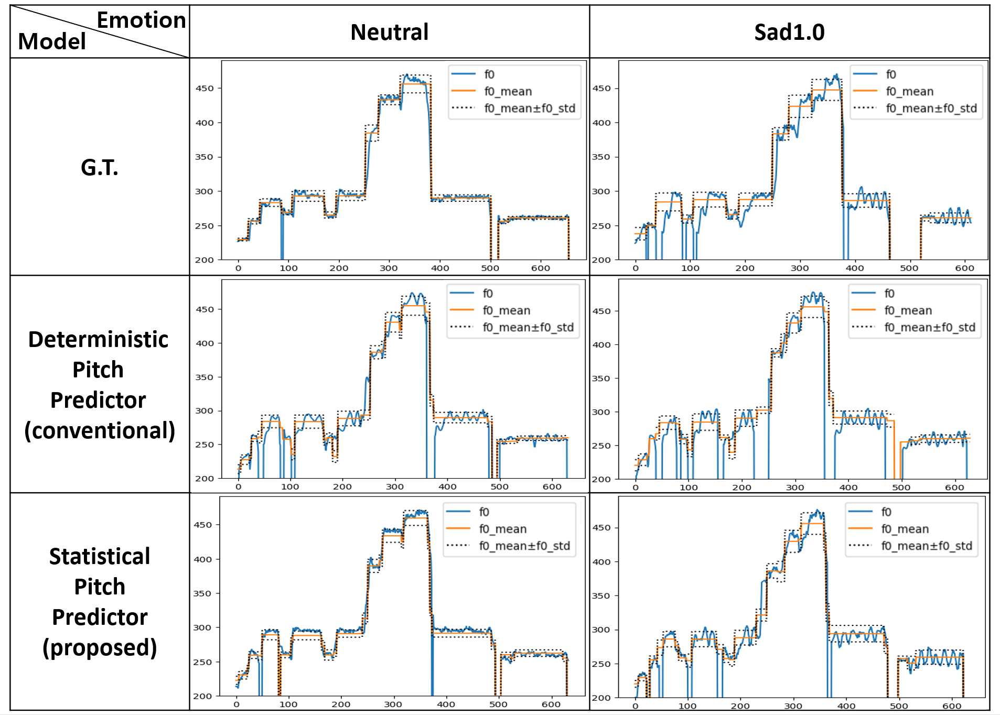
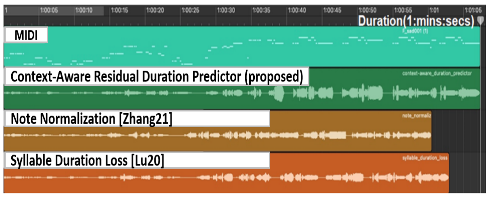
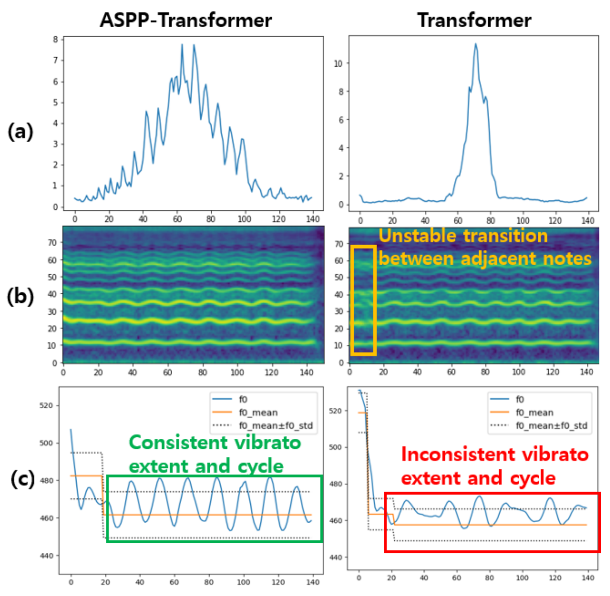

MuSE-SVS
Multi Singer Emotional Singing Voice Synthesizer that Controls Emotional Intensity
We propose a multi-singer emotional singing voice synthesizer, Muse-SVS, that expresses emotion at various intensity levels by controlling subtle changes in pitch and phoneme length while accurately following the lyrics, pitch, and phoneme length of the score. To control multiple style attributes avoiding loss of fidelity and expressiveness due to interference between attributes, Muse-SVS represents all attributes and their relations together by a joint embedding in a unified embedding space. Muse-SVS can express emotional intensity not in the training data, including even stronger emotions than those in the training data, through emotion embedding interpolation and extrapolation. We also propose a statistical pitch predictor to express pitch variance according to emotional intensity and a context-aware residual duration predictor to prevent the accumulation of variances in phoneme duration, which is crucial for synchronization when synthesizing long singing voices. In addition, we propose a novel ASPP-Transformer to improve fidelity and expressiveness by referring to broad contexts. In experiments, Muse-SVS exhibited improved fidelity, expressiveness, and synchronization performance compared with the baseline models. The results of quantitative evaluation and visualization analysis show that the proposed methods effectively express the variance in pitch and phoneme duration according to emotional intensity. To the best of our knowledge, Muse-SVS is the first singing voice synthesizer capable of controlling emotional intensity.
 |  |
| Model Overall Structure | Variance Adaptor Structure |
Demo
- Comparison to Baseline Models
Because MuSE-SVS is the first mutli-singer emotional SVS model, there is no exisiting baselnie model to compare fairly. Therefore, we built two multi-singer emotional SVS models by extending FastSpeech2 and VISinger to multi-singer and multi-emotional models, and named then ‘extFFTSinger’ and ‘extVISinger’. These audio samples are the results of training MuSE-SVS and baseline models to learn embeddings of multi-singer, multi-emotion and multi-intensity. If you need more details of baseline models, please check the paper.
Samples of male singer (Sad)
Neutral Sad 0.3 Sad 0.7 Sad 1.0 MuSE-SVS extVISinger extFFTSinger
Samples of female singer (Happy)
Neutral Happy 0.3 Happy 0.7 Happy 1.0 MuSE-Singer extVISinger extFFTSinger - Statistical Pitch Predictor
Statistical pitch predictor estimates the distribution of the F0 frequencies at the phoneme level. The pitch predictor consists of a pitch mean predictor and a pitch variance predictor and estimates the local mean µi and local variance σi2 of the F0 frequencies within the interval of each phoneme yi Both predictors take as input the joint embedding E(yi, z1,z2) to reflect the influence of singer ID (z1) and emotional intensity (z2). To reliably estimate mean pitch, the pitch mean predictor Predpm(·) estimates mean pitch µ̂i indirectly by first predicting the residual r̂i between the note pitch pi and the ground truth mean pitch µi measured from the training sample and then adding the predicted residual to the note pitch as µ̂i = pi + r̂i The pitch variance predictor Predpcv(·) predicts the coefficient of variances CVi = σi / µi because CVi removes the correlation with pitch mean by normalization and therefore is more reliably predictable.
The F0 contours (blue solid line) of a female singer’s voices with emotional intensity levels neutral (left) and sad1.0(right).
Neutral Sad 1.0 G.T. Deterministic Pitch Predictor(conventional) Statistical Pitch Predictor(proposed) - Context-aware Residual Duration Predictor(CRDP)
CRDP minimizes synchronization error by considering cumulative duration up to the previous phoneme when predicting the next phoneme duration hwile imitating variances in training samples to express emotion for individual phonemes. CRDP predicts the duration of phonemes sequentially with an autoregressive structure. When it predicts the duration of a phoneme, it takes the synchronization error of the previous phoneme and predicts the next phoneme duration inclined to compensate for the synchronization error at the previous step. At each step, CRDP takes the joint embedding E(yi,z1,z2) to reflect the influence of singer ID and emotional intensity. CRDP also takes the synchronization error of the previous step SyncErr(i-1) as input. CRDP learns to estimate residual duration si = di - d̄i as ŝi = Predd(i)(E(yi,z1,z2), SyncErr(i-1)). Then, CRDP adds the predicted residual to the note duration as d̂i = d̄i + ŝi.
The synchronization errors of duration predictors for a long song composed of 117 notes whose length is 67.08 seconds.
- ASPP-Transformer
ASPP-Transformer is extended FFT by replacing convolution iwth atrous spatial pyramid pooling (ASPP), as shown in the figure. It inherits the advantages of ASPP in that it can refer to a broad context with minimal increases in computation and parameters. To focus on the local neighborhoods while incorporatiing a broad context, we assign a large number of channels to the filters with low atrous rates.
The effective receptive fields of the proposed ASPP-Transformer and the conventional Transformer.
ASPP-Transformer Transformer - Interpolation and Extrapolation
Muse-SVS applies emotion embedding interpolation. It learns only three embeddings, each of which is for happy0.1, neutral, and sad0.1, and computes the embeddings of intermediate intensity levels by interpolation as rhappyt = t*rhappy1.0 + (1-t)*rneutral and rsadt = t*rsad1.0 + (1-t)*rneutral .
It has multiple advantages: first, it is possilbe to express intermediate intensity levels, such as happy0.5 and sad0.8, that are not in the training data. Furthermore, it enalbes the synthesis of singing voices with emotional intensities beyond those in the training data by emotion embedding extrapolation with t > 1. Third, applying emotion embedding interpolation during training leads the model to reflect the neighborhood relation between emotional intensity levels and thereby to learn a linear embedding space, as shown in a figure.
Embedding Space
Neutral Happy 0.5 (Interpolation) Happy 1.0 Happy 1.7 (Extrapolation) MuSE-SVS - Synthesized Singing Voice with MIDI
This audio sample is the result of concation of multiple singing voice samples which are syntheiszed by same song but different part of each. We add MIDI of the song to the audio sample of singing voice.